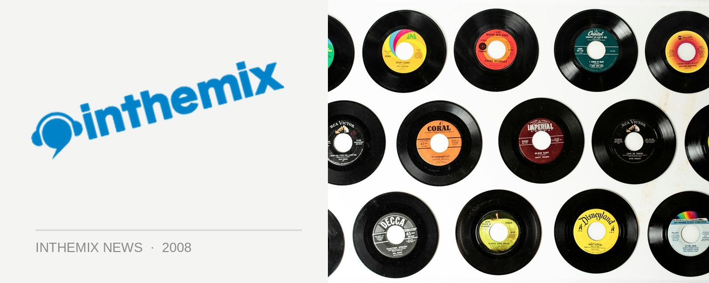

Madonna is coming to Australia
Whether you call yourself a fan or not, Madonna has been intertwined with clubbing culture for the entirety of her career – working with producers like William Orbit, Stuart Price and Mirwais Ahmadzai to name but a few. And there’s a lot of obsessive fans out there who’ve been waiting a long time for Madonna to tour again – but they can rest easy, because she’s now confirmed that the release of her new album Hard Candy will be accompanied by a tour of Australia.
In an interview with the Herald Sun, Madonna revealed that she plans to include Australia in her upcoming world tour itinerary, which will take place later this year and early in 2009. “It’s been a while. It’s the least I can do,” she told the paper. And her promoter Michael Chugg has also revealed that a tour to Australia is definitely on the cards. “It is being talked about and there is a promoter trying to put it together,” he said.
While her last Grammy Award winning album Confessions on a Dance Floor (which debuted at #1 in over 30 countries and sold a whopping eight million copies) saw Madonna heartily embracing the electro-pop sound, and working with the ‘Thin White Duke’ himself Stuart Price who was one of the pioneers of the electro house sound, the new album Ear Candy sees another change in direction. Collaborating with massive names like Timbaland, Justin Timberlake, Pharrell Williams and Nate ‘Danja’ Hills, this time Madge is trying her hand at urban and hip hop music. While it’s hard to tell whether the results will be irresistibly catchy or just plain embarrassing, you’ll be able to find out for yourself when the album hits the record shelves in late April.
Stay tuned to ITM for more news as it comes to hand. We know you’re hanging on the line for this one!